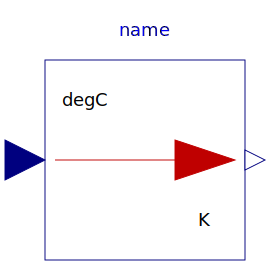
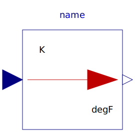
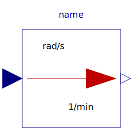
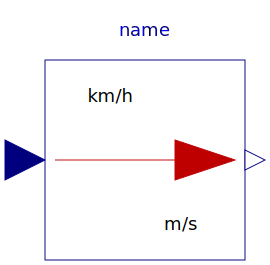
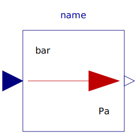

This package consists of blocks that convert an input signal with a specific unit to an output signal in another unit (e.g., conversion of an angle signal from "deg" to "rad").
| Name | Description |
|---|---|
| To_degC | Convert from Kelvin to degCelsius |
|  From_degC | Convert from degCelsius to Kelvin |
|  To_degF | Convert from Kelvin to degFahrenheit |
| From_degF | Convert from degFahrenheit to Kelvin |
| Convert from Kelvin to degRankine | |
| Convert from degRankine to Kelvin | |
| To_deg | Convert from radian to degree |
| From_deg | Convert from degree to radian |
|  To_rpm | Convert from radian per second to revolutions per minute |
| Convert from revolutions per minute to radian per second | |
| Convert from metre per second to kilometre per hour | |
|  From_kmh | Convert from kilometre per hour to metre per second |
| To_day | Convert from second to day |
| Convert from day to second | |
| Convert from second to hour | |
| Convert from hour to second | |
| Convert from second to minute | |
| From_minute | Convert from minute to second |
| Convert from cubic metre to litre | |
| Convert from litre to cubic metre | |
| Convert from Joule to kilo Watt hour | |
| From_kWh | Convert from kilo Watt hour to Joule |
| Convert from Pascal to bar | |
|  From_bar | Convert from bar to Pascal |
| Convert from kilogram per second to gram per second | |
| Convert from gram per second to kilogram per second |